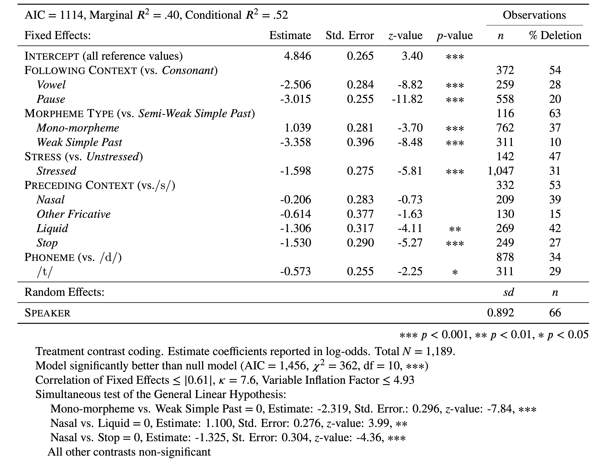
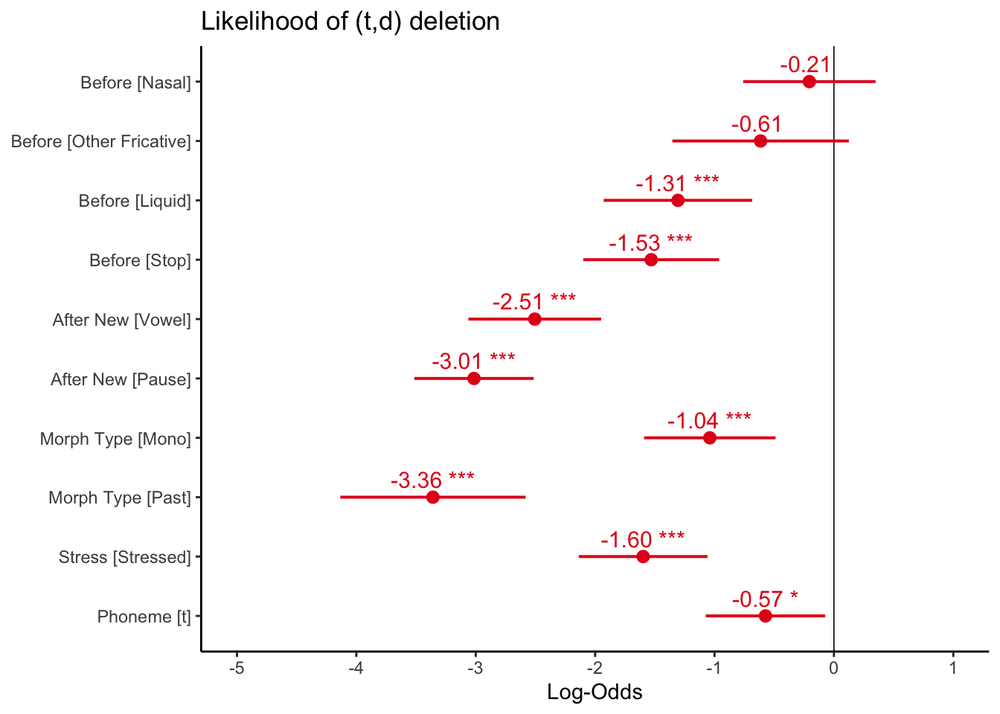
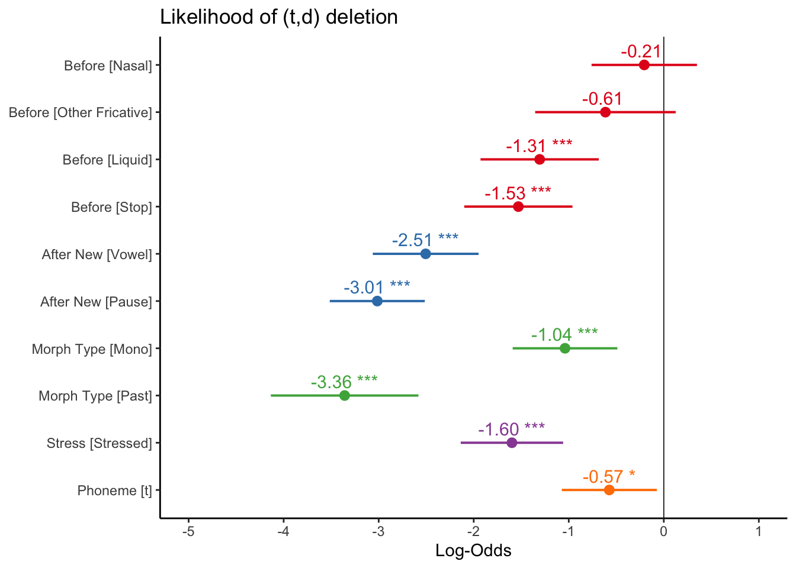

# Treatment Contrasts (vs. reference)
options(contrasts = c("contr.treatment", "contr.poly"))Mixed-Efects Logistic Regression Analysisː Part 4
Doing a mixed-effects logistic regression analysis suitable for comparing to a Goldvarb analysis. Part 4: Treatment Contrast Coding
Matt Hunt Gardner ![]()
Before you proceed with this section, please make sure that you have your data loaded and modified based on the code here and that Dep.Var is re-coded such that Deletion is the second factor. Next, you set the global R options to employ sum contrast coding.
Treatment Contrasts (vs. reference value)
Rather than compare levels of each parameter to the mean of that parameter, you can instead specify one level as the reference level and then compare every other level to it (see Part 1). To do this you need to set the global contrasts to contr.treatment.
This is actually the more common way to perform a mixed-effects logistic regression outside of sociolinguistics. With the contrasts now set to treatment contrasts you can re-run your most-parsimonious model.
# Most Parsimonious Model: Generalized linear
# mixed effects model with the fixed main effects
# of Before, After.New, Morph.Type, Stress,
# Phoneme, and the random effect of Speaker
library(lme4)
td.glmer.parsimonious <- glmer(Dep.Var ~ After.New +
Morph.Type + Before + Stress + Phoneme + (1 | Speaker),
data = td, family = "binomial", control = glmerControl(optCtrl = list(maxfun = 20000),
optimizer = "bobyqa"))
summary(td.glmer.parsimonious)Generalized linear mixed model fit by maximum likelihood (Laplace
Approximation) [glmerMod]
Family: binomial ( logit )
Formula: Dep.Var ~ After.New + Morph.Type + Before + Stress + Phoneme +
(1 | Speaker)
Data: td
Control: glmerControl(optCtrl = list(maxfun = 20000), optimizer = "bobyqa")
AIC BIC logLik deviance df.resid
1114 1175 -545 1090 1177
Scaled residuals:
Min 1Q Median 3Q Max
-5.223 -0.488 -0.259 0.495 14.033
Random effects:
Groups Name Variance Std.Dev.
Speaker (Intercept) 0.796 0.892
Number of obs: 1189, groups: Speaker, 66
Fixed effects:
Estimate Std. Error z value Pr(>|z|)
(Intercept) 0.902 0.265 3.40 0.00067 ***
After.NewPause -3.015 0.255 -11.82 < 2e-16 ***
After.NewVowel -2.506 0.284 -8.82 < 2e-16 ***
Morph.TypePast -2.319 0.296 -7.84 4.7e-15 ***
Morph.TypeSemi-Weak 1.039 0.281 3.70 0.00022 ***
BeforeNasal 1.100 0.276 3.99 6.6e-05 ***
BeforeOther Fricative 0.692 0.407 1.70 0.08907 .
BeforeS 1.306 0.317 4.11 3.9e-05 ***
BeforeStop -0.224 0.299 -0.75 0.45349
StressUnstressed 1.598 0.275 5.81 6.2e-09 ***
Phonemet -0.573 0.255 -2.25 0.02462 *
---
Signif. codes: 0 '***' 0.001 '**' 0.01 '*' 0.05 '.' 0.1 ' ' 1
Correlation of Fixed Effects:
(Intr) Aft.NP Aft.NV Mrp.TP M.TS-W BfrNsl BfrOtF BeforS BfrStp
After.NewPs -0.464
After.NwVwl -0.294 0.529
Mrph.TypPst -0.232 0.260 0.190
Mrph.TypS-W -0.217 0.009 0.050 0.058
BeforeNasal -0.221 -0.343 -0.187 -0.047 0.222
BfrOthrFrct -0.098 -0.181 -0.041 -0.498 0.238 0.337
BeforeS -0.056 -0.451 -0.132 -0.102 0.337 0.553 0.480
BeforeStop -0.259 0.016 0.039 -0.132 0.389 0.443 0.472 0.557
StrssUnstrs 0.059 -0.230 -0.511 -0.046 0.123 -0.047 0.092 0.185 -0.089
Phonemet -0.386 0.265 0.009 0.126 -0.337 -0.214 -0.372 -0.608 -0.488
StrssU
After.NewPs
After.NwVwl
Mrph.TypPst
Mrph.TypS-W
BeforeNasal
BfrOthrFrct
BeforeS
BeforeStop
StrssUnstrs
Phonemet -0.107The treatment contrast output looks very much like the model you constructed using sum contrasts (you’ll notice that the measures of model fit and the description of the random effects are identical), but there are a few key differences. Firstly, the listed levels of each parameter are now written-out rather than just being numbers. This makes treatment contrast results somewhat easier to interpret. The levels that are listed are all the levels other than the first in that level’s factor order. The default order of factors is alphabetic, though you can change this (as you did previously for Dep.Var and Age.Group). The first level in each parameter is set as the reference level. The reference level for Before is Liquid, the reference level for After.New is Consonant, the reference level for Morph.Type is Mono, the reference level for Stress is Stressed, and the reference level for Phoneme is d.
The (Intercept) value is the likelihood of a given token being the application value if that token is coded with all the reference levels. In other words, 0.902 is the likelihood, in log odds, of a token being Deletion if that token has a preceding liquid, a following consonant, is mono-morphemic, is stressed, and is an underlying /d/. The estimate for each level is the change in likelihood if that parameter changes to the given level. The difference in likelihood resulting from a token being unstressed, instead of stressed, but with all other parameter settings the same, is 1.598 In other words, a token with a preceding liquid, following consonant, that is mono-morphemic, that is an underlying /d/, and is unstressed is \(2.500\) log odds (\(0.902+1.598\)) or \(92\%\) probability.
plogis(2.5)[1] 0.92
Warning
With treatment contrasts you must center your continuous variables.
With sum contrasts the reference “level” is the mean for each parameter not a particular level of the parameter; this includes continuous factors. For this reason, whether or not you center continuous factors with sum contrast coding doesn’t really matter. The reference level for treatment contrast coding is the first level of the parameter. For continuous variables this means the reference level is \(0\). For some applications this might be okay — for example, if your continuous variable is voice onset time. For most of your applications, though, where continuous factors represent age, this is not desirable. Zero is not a meaningful year of birth or a meaningful age. For this reason we center these factors, thereby changing the mean or average age to zero (so that \(0\) equals something meaningful), and all other ages as differences from that mean. This results in the intercept of a treatment contrast model being the overall likelihood when all the discrete parameters are set to their first value and the continuous parameters set to their mean value.
The p-value for each level represents whether or not the resultant difference (e.g., estimate) is significantly different from zero. The p-value for BeforeStop is \(0.45350\). This is greater than \(0.05\), and therefore you say there is not a significant difference in likelihood between tokens with a preceding liquid and tokens with a preceding stop. This changes the constraint hierarchy for this factor group to S > Nasal > Other Fricative > Liquid/Stop. It also justifies re-coding these two factors into a single parameter level.
| Treatment Contrasts | Sum Contrasts | |
|---|---|---|
| Point of comparison | Reference level | Mean of parameter |
| Level estimate | Difference in likelihood from reference level | Difference in likelihood from parameter mean |
| Intercept | Likelihood with all reference levels | Grand Mean(mean of parameter means) |
| Missing value | Reference level(first level of factor) | Last level of factor |
| Missing value estimate | 0 | 0 - sum of remaining estimates |
| Continuous Parameters | Must center | Should center |
As before, the correlation of fixed effects suggests where there might be non-orthogonality. Values over \(|0.3|\) should be investigated, those above \(|0.7|\) should be seriously investigated. Calculating the Variable Inflation Factor (VIF) and Condition Number (\(\kappa\)) is, as always, useful in determining if these correlations are within acceptable limits of collinearity (as discussed in Part 3).
# Calculate the Variable Inflation Factor
library(performance)
check_collinearity(td.glmer.parsimonious)# Check for Multicollinearity
Low Correlation
Term VIF VIF 95% CI Increased SE Tolerance Tolerance 95% CI
After.New 2.68 [2.45, 2.94] 1.64 0.37 [0.34, 0.41]
Morph.Type 2.06 [1.90, 2.25] 1.44 0.49 [0.44, 0.53]
Before 4.93 [4.46, 5.46] 2.22 0.20 [0.18, 0.22]
Stress 1.68 [1.56, 1.83] 1.30 0.59 [0.55, 0.64]
Phoneme 1.87 [1.73, 2.04] 1.37 0.53 [0.49, 0.58]# Calculate Condition Number
library(JGmermod)
collin.fnc.mer(td.glmer.parsimonious)$cnumber[1] 7.6The highest VIF is (still) lower than \(5\), indicating low collinearity but \(\kappa = 7.6\), which is slightly above the threshold of \(6\) indicating low-to-moderate collinearity. This latter value further suggests investigating the across-parameter correlations (see Part 3). For the moment, however, you will keep using the td.glmer.parsimonious model.
You could choose to report the results of this treatment contrast analysis in your manuscript. If you do, a Goldvarb-style table wouldn’t be appropriate. Instead a lme4-style table is needed.

The order of parameters in Table 1 is based on the the relative ordering in of the Wald \(\chi^2\) test. The parameter levels are also ordered by their estimates. You’ll notice that all the estimates are negative and they don’t match up to the results reported in the glmer() results above. This is because, before creating this table, each factor was reordered based on level estimates so that the reference level, i.e., first level, was also the level that most favoured the application value. This step is not needed, but I find this makes understanding the constraint hierarchy much easier for the reader. It also means that the intercept represents the likelihood of the application value when it is most likely. Alternatively, you could re-arrange the factor levels so that the least likely levels were the reference levels. This would result in estimates that were all positive and showed how much switching levels improved the likelihood. What you choose to do is entirely up to you and the story you want to tell with your analysis.
# Reorder levels of Before from most favouring to
# least favouring
td$Before <- factor(td$Before, levels = c("S", "Nasal",
"Other Fricative", "Liquid", "Stop"))
# Reorder levels of After.New from most favouring
# to least favouring
td$After.New <- factor(td$After.New, levels = c("Consonant",
"Vowel", "Pause"))
# Reorder levels of Morph.Type from most
# favouring to least favouring
td$Morph.Type <- factor(td$Morph.Type, levels = c("Semi-Weak",
"Mono", "Past"))
# Reorder levels of Stress from most favouring to
# least favouring
td$Stress <- factor(td$Stress, levels = c("Unstressed",
"Stressed"))
# Most Parsimonious Model: Generalized linear
# mixed effects model with the fixed main effects
# of Before, After.New, Morph.Type, Stress,
# Phoneme, , and the random effect of Speaker
td.glmer <- glmer(Dep.Var ~ Before + After.New + Morph.Type +
Stress + Phoneme + (1 | Speaker), data = td, family = "binomial",
control = glmerControl(optCtrl = list(maxfun = 20000),
optimizer = "bobyqa"))
summary(td.glmer)Generalized linear mixed model fit by maximum likelihood (Laplace
Approximation) [glmerMod]
Family: binomial ( logit )
Formula: Dep.Var ~ Before + After.New + Morph.Type + Stress + Phoneme +
(1 | Speaker)
Data: td
Control: glmerControl(optCtrl = list(maxfun = 20000), optimizer = "bobyqa")
AIC BIC logLik deviance df.resid
1114 1175 -545 1090 1177
Scaled residuals:
Min 1Q Median 3Q Max
-5.223 -0.488 -0.259 0.495 14.033
Random effects:
Groups Name Variance Std.Dev.
Speaker (Intercept) 0.796 0.892
Number of obs: 1189, groups: Speaker, 66
Fixed effects:
Estimate Std. Error z value Pr(>|z|)
(Intercept) 4.846 0.635 7.63 2.4e-14 ***
BeforeNasal -0.206 0.283 -0.73 0.46716
BeforeOther Fricative -0.614 0.377 -1.63 0.10350
BeforeLiquid -1.306 0.317 -4.11 3.9e-05 ***
BeforeStop -1.530 0.290 -5.27 1.4e-07 ***
After.NewVowel -2.506 0.284 -8.82 < 2e-16 ***
After.NewPause -3.015 0.255 -11.82 < 2e-16 ***
Morph.TypeMono -1.039 0.281 -3.70 0.00022 ***
Morph.TypePast -3.358 0.396 -8.48 < 2e-16 ***
StressStressed -1.598 0.275 -5.81 6.2e-09 ***
Phonemet -0.573 0.255 -2.25 0.02461 *
---
Signif. codes: 0 '***' 0.001 '**' 0.01 '*' 0.05 '.' 0.1 ' ' 1
Correlation of Fixed Effects:
(Intr) BfrNsl BfrOtF BfrLqd BfrStp Aft.NV Aft.NP Mrp.TM Mrp.TP
BeforeNasal -0.536
BfrOthrFrct -0.222 0.264
BeforeLiqud -0.705 0.583 0.323
BeforeStop -0.458 0.439 0.395 0.519
After.NwVwl -0.388 -0.033 0.067 0.132 0.184
After.NewPs -0.514 0.172 0.184 0.451 0.510 0.529
Morph.TypMn -0.573 0.162 0.027 0.337 -0.032 -0.050 -0.009
Mrph.TypPst -0.513 0.166 -0.318 0.315 -0.041 0.106 0.188 0.666
StrssStrssd -0.604 0.253 0.056 0.185 0.294 0.511 0.230 0.123 0.122
Phonemet -0.660 0.473 0.111 0.608 0.162 0.009 0.265 0.337 0.333
StrssS
BeforeNasal
BfrOthrFrct
BeforeLiqud
BeforeStop
After.NwVwl
After.NewPs
Morph.TypMn
Mrph.TypPst
StrssStrssd
Phonemet 0.106By reordering the levels of you verify some intuitions generated by previous analyses about the constraint hierarchy for Before. There is not a significant difference between the reference level (S) and Nasal or between the reference level (S) and Other Fricatives. This suggests that your constraint hierarchy is actually All Fricatives/Nasals > Liquids/Stops (remember in the non-reordered summary(td.glmer) Liquids and Stops were not significantly different). This is an insight into the data that the glmer() model with sum contrasts couldn’t have provided.
But what about the other parameter levels? For example, there is a significant difference between following consonant and following vowel. There is also a significant difference between following consonant and following pause. But is there a significant difference between following vowel and following pause? You could run a series of glmer() models in which you keep reordering the parameter levels to find out where the significant differences are. However, the glmer() model you’ve just constructed contains this information, you just need to know how to ask for it.
The first task is to create a contrast matrix of all the comparisons you want to make. You use rbind() to create two rows (which you call "After.NewVowel vs. After.NewPause" and "Morph.TypeMono vs. Morph.TypePast"). Each row has 11 cells. These 11 cells correspond to the 11 rows in the glmer() fixed effects results: the first cell corresponds to the (Intercept), the second cell corresponds to BeforeNasal, etc. To compare two estimates place a 1 and -1 in the corresponding cells and a 0 in all remaining cells. In the code below there is a 1 in the sixth and a -1 in the seventh cells because After.NewVowel and After.NewPause are the sixth and seventh rows in the fixed effects results. You use the glht() function (a simultaneous test of the General Linear Hypotheses) in the multcomp package to calculate the comparisons. A summary() for that function displays the results.
# Create contrast matrix
d <- rbind(`After.NewVowel vs. After.NewPause` = c(0,
0, 0, 0, 0, 1, -1, 0, 0, 0, 0), `Morph.TypeMono vs. Morph.TypePast` = c(0,
0, 0, 0, 0, 0, 0, 1, -1, 0, 0))
# Test pairwise comparisons
library(multcomp)
summary(glht(td.glmer, d))
Simultaneous Tests for General Linear Hypotheses
Fit: glmer(formula = Dep.Var ~ Before + After.New + Morph.Type + Stress +
Phoneme + (1 | Speaker), data = td, family = "binomial",
control = glmerControl(optCtrl = list(maxfun = 20000), optimizer = "bobyqa"))
Linear Hypotheses:
Estimate Std. Error z value Pr(>|z|)
After.NewVowel vs. After.NewPause == 0 0.509 0.263 1.94 0.1
Morph.TypeMono vs. Morph.TypePast == 0 2.319 0.296 7.84 <1e-10 ***
---
Signif. codes: 0 '***' 0.001 '**' 0.01 '*' 0.05 '.' 0.1 ' ' 1
(Adjusted p values reported -- single-step method)The results indicate that the difference in likelihood of After.NewVowel and After.NewPause on the Intercept are not significantly different from zero (\(p>0.05\)). This means that the real contrast for this factor group is consonant versus not-consonant. On the other hand, there is a significant difference between Morph.TypeMono and Morph.TypePast indicating that this factor group has a real three-way contrast between semi-weak simple past, mono-morphemes, and weak simple past. Again, by performing a detailed analysis of the contrasts between factors in addition to an analysis of the contrasts between factors and their mean, you achieve a much more nuanced (and I argue superior) understanding of the three lines of evidence because you can pinpoint exactly where significant contrasts exist.
An easier method for generating the contrast matrix is provided below. For a different analysis replace td.glmer.parsimonious with your model name, and replace Before, After.New, etc. with your own predictors. You don’t need to include all predictors. You could also include more. Just adjust the number of k1, k2, etc. objects you create. This method provides all the contrasts for a single predictor variable, unlike the method above, in which you specify the specific contrasts you are interested in. I have not included Phoneme or Stress here as they are binary, so the contrast between the two levels is represented in the summary(td.glmer.parsimonious) output already.
library(multcomp)
k1 <- glht(td.glmer.parsimonious, mcp(Before = "Tukey"))$linfct
k2 <- glht(td.glmer.parsimonious, mcp(After.New = "Tukey"))$linfct
k3 <- glht(td.glmer.parsimonious, mcp(Morph.Type = "Tukey"))$linfct
summary(glht(td.glmer.parsimonious, linfct = rbind(k1,
k2, k3)))
Simultaneous Tests for General Linear Hypotheses
Fit: glmer(formula = Dep.Var ~ After.New + Morph.Type + Before + Stress +
Phoneme + (1 | Speaker), data = td, family = "binomial",
control = glmerControl(optCtrl = list(maxfun = 20000), optimizer = "bobyqa"))
Linear Hypotheses:
Estimate Std. Error z value Pr(>|z|)
Nasal - Liquid == 0 1.100 0.276 3.99 0.0010 **
Other Fricative - Liquid == 0 0.692 0.407 1.70 0.6009
S - Liquid == 0 1.306 0.317 4.11 <0.001 ***
Stop - Liquid == 0 -0.224 0.299 -0.75 0.9938
Other Fricative - Nasal == 0 -0.408 0.408 -1.00 0.9630
S - Nasal == 0 0.206 0.283 0.73 0.9950
Stop - Nasal == 0 -1.325 0.304 -4.36 <0.001 ***
S - Other Fricative == 0 0.614 0.377 1.63 0.6530
Stop - Other Fricative == 0 -0.916 0.374 -2.45 0.1570
Stop - S == 0 -1.530 0.290 -5.27 <0.001 ***
Pause - Consonant == 0 -3.015 0.255 -11.82 <0.001 ***
Vowel - Consonant == 0 -2.506 0.284 -8.82 <0.001 ***
Vowel - Pause == 0 0.509 0.263 1.94 0.4306
Past - Mono == 0 -2.319 0.296 -7.84 <0.001 ***
Semi-Weak - Mono == 0 1.039 0.281 3.70 0.0031 **
Semi-Weak - Past == 0 3.358 0.396 8.48 <0.001 ***
---
Signif. codes: 0 '***' 0.001 '**' 0.01 '*' 0.05 '.' 0.1 ' ' 1
(Adjusted p values reported -- single-step method)You can add the results from this glht() test to your manuscript table, as in Table 1.
Visualizing the fixed effects
As in Part 2, you can use the plot_model() function to examine the fixed effects.
# Load required packages
library(sjPlot)
library(sjlabelled)
library(sjmisc)
library(ggplot2)
# Plot fixed effects
plot_model(td.glmer, transform = NULL, show.values = TRUE,
value.offset = 0.3, vline.color = "black", title = "Likelihood of (t,d) deletion") +
theme_classic()
Unlike the fixed effects plot for the sum contrast coding model, in which zero on the x-axis represented the grand mean, or overall baseline likelihood, zero on the x-axis here represents the likelihood when all predictors are set to their reference values. You have arbitrarily set all the reference values to the most favouring values, so all the values represented in the plot are below zero, as they have negative estimates (they all disfavour Deletion relative to the reference values).
Any predictor level whose error bars overlap the zero line are not significantly different from the reference level of that predictor. As is shown in the glmer() output, for preceding context, Nasal and Other Fricative are not significantly different from the reference value S. The error bars can also tell you how the non-reference values relate to each other, as with the glht() test. Any error bars for levels of the same predictor that overlap indicate those levesl are not significantly different from each other. By looking at the plot you can see that for preceding context Nasal and Stop and Nasal and Liquid do not overlap (though the space between Nasal and Liquid is quite hard to see), but all other non-reference values do. Likewise, for following context Vowel and Pause overlap, indicating that they are not significantly differnet from each other, despite both being significantly different from the reference level Consonant. For morpheme type, however, both Mono and Past are significantly different from the reference value Semi-Weak as their error bars do not cross the zero line, and also significantly different from each other, as their error bars do not overlap.
Instead of colouring all the predictor levels similarly (as they are all below zero), you can instead colour them by predictor type using the group.terms= option, and then specifying which group each term belongs to, as in the example below. The first four terms (the four Before levels) are all 1, the next two (the two After.New levels) are 2, etc. This might make presenting a plot like this easier to read, especially as part of a slide presentation.
# Plot fixed effects
plot_model(td.glmer, transform = NULL, show.values = TRUE,
value.offset = 0.3, vline.color = "black", title = "Likelihood of (t,d) deletion",
group.terms = c(1, 1, 1, 1, 2, 2, 3, 3, 4, 5)) +
theme_classic()
Reuse
CC-BY-SA 4.0
Citation
BibTeX citation:
@online{gardner,
author = {Gardner, Matt Hunt},
title = {Mixed-Efects {Logistic} {Regression} {Analysisː} {Part} 4},
series = {Linguistics Methods Hub},
volume = {Doing LVC with R},
date = {},
url = {https://lingmethodshub.github.io/content/R/lvc_r/116_lvcr.html},
doi = {10.5281/zenodo.7160718},
langid = {en}
}
For attribution, please cite this work as:
Gardner, Matt Hunt. n.d. Mixed-Efects Logistic Regression Analysisː Part
4. Linguistics Methods Hub: Doing LVC with R. (https://lingmethodshub.github.io/content/R/lvc_r/116_lvcr.html).
doi: 10.5281/zenodo.7160718